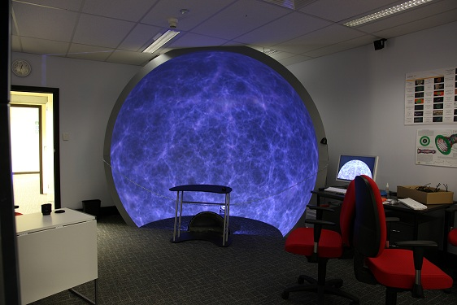
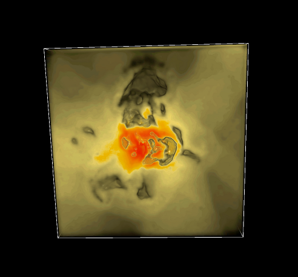

The following reports are both about the visualisation pipeline that I developed when working for ICRAR (International Centre for Radio Astronomy Research).
The first report was my final report for my internship with iVec and describes the process I went through designing the algorithm, reading from HDF5 files, the file structures, Smoothed Particle Hydrodynamics code, saving data to volumetric files, 2D Occlusion, Periodic boundary conditions. This report also discusses alternate visualisation methods such as cube maps, fisheye and spherical projections for use on curved screens (domes).

Download the pdf here - Visualising Galaxy Simulations
The second report was completed as a final project for my degree. I described additions to the Gimic Visualisation Pipeline including exporting to the native file formats of Drishti and POVray, rendering images in parallel, tracking code, stereoscopic imaging, RGB volumes, cross platform support and parallel vs distributed benchmarking. This was my first report using Latex and I think it added a much more professional look than the first report.

Download the pdf here - Extending the Capabilities of the GIMIC Visualistaion Pipeline